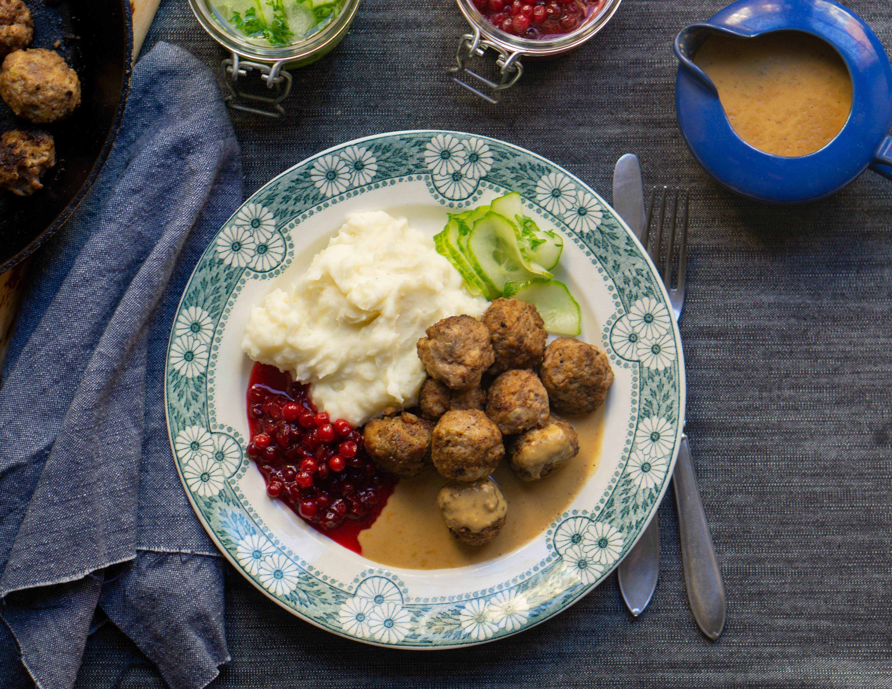

köttbullar

- 3kg Köttfärs
- 15 ägg
- 1dl ströbröd
- 1,5dl mjölk
- 1 lök
- 1tsk salt
- 1/2tsk svartpeppar
- smör
- 1/2tsk paprikapulver
Såhär gör du...... 1.Blanda mjölk och ströbröd i en skål. Låt stå i cirka 5 minuter. 2.Hacka löken. 3.Lägg i färs,ägg,lök,salt,peppar och paprikapulver. 4.Blanda allt tills du får jämn smet. 5.Forma små köttbullar med händerna.